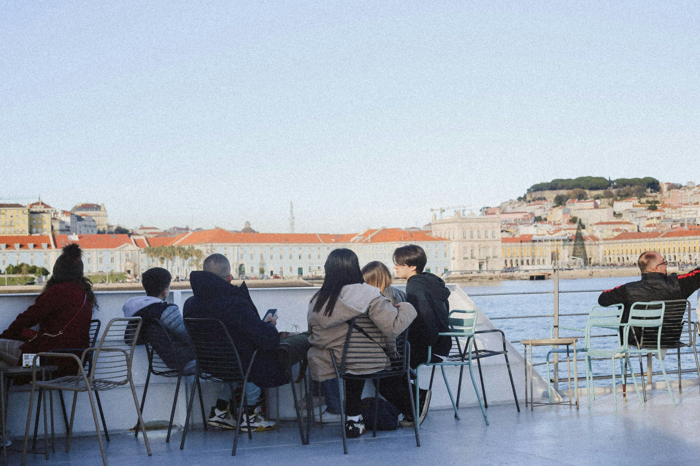

Company Offsite Statistics: What the Data Says
Key company offsite statistics from recent reports: how often companies meet, budgets, goals, favourite months and destinations, and what it means for you.

Offsites are back, and in many companies bigger than before. Here are the most useful figures from two recent industry reports, and what they mean when you plan your own retreat.
How often companies meet
- Companies average 2.6 offsite events per year, up from 2.4 in 2019 (Emburse, The State of Corporate Offsites, survey of 2,000 US employees, November 2024).
- The share of companies holding no offsites at all fell from 16% to 4% over the same period (Emburse).
- 70% of companies host one or two offsites a year, and 10% meet quarterly (Surf Office, State of Company Offsites 2026).
What it means: one major retreat a year is now the norm, with remote companies adding smaller team meetups. See the rise of the quarterly offsite.
Budgets are rising
- 59% of companies report higher offsite budgets than in 2019 (Emburse).
What it means: leadership sees offsites as an investment. To protect your budget, link it to clear outcomes. Our guide on offsite ROI explains how.
Why companies hold offsites
- 85% of companies name team building as the main goal of their retreat (Surf Office).
- 57% of fully remote companies consider offsites essential to their business success (Surf Office).
- On average, 44% of offsite time goes to social programming and team building, versus 36% to work activities (Emburse).
What it means: connection is the main goal. Plan the programme with real shared experiences, not just meetings. See our team-building activities.

Where and when
- 62% of companies have held an offsite in a country other than their team's main location (Surf Office).
- September was the most popular month, with 18% of bookings in Surf Office's data for 2024.
- 54% of companies prefer beachside retreats, while countryside settings grew strongly in popularity (Surf Office).
What it means: popular months fill fast. Book September retreats early, or consider May, June or October. See our 2027 offsite calendar and the best destinations in Europe.
The biggest challenge
- 51% of companies cite location selection and venue sourcing as their biggest planning challenge (Surf Office).
What it means: finding the right venue takes time. That's where a partner with a large venue network helps. We work with more than 300 partner venues. Read how to choose an offsite venue.
Employees and partners
- 55% of companies allow partners to attend non-meeting parts of offsites (Emburse).
- 72% of employees at high-performing companies are excited about offsites, versus 49% at underperforming companies (Emburse).
A note on the data
Emburse's report is based on a survey of 2,000 US full-time employees conducted in November 2024. Surf Office's report combines 90 survey responses with internal data from more than 200 offsites, mostly from 2024. Use these figures as indicators, not universal truths.
Turn the data into a plan
Talk to our expert and we'll help you plan a retreat that fits your goals and budget, with 3 proposals including every participant's flight. Or try the budget calculator.
Sources: Emburse, The State of Corporate Offsites · Surf Office, The State of Company Offsites Report 2026
Frequently asked questions
How many offsites do companies hold per year?
Recent data shows companies average around 2.6 offsite events per year, with most hosting one or two major retreats.
What is the main goal of company offsites?
Team building and connection. In one recent survey, 85% of companies named it as their main goal.
What is the most popular month for company retreats?
September is among the most popular months, followed by late spring. Book early for these periods.
Let's plan your team's next retreat
Venue, programme, activities and every participant's flight, handled by one team. It starts with a call with our expert.
Keep reading
All articles
Company Offsite Trends for 2027
The company offsite trends shaping 2027: purpose-led retreats, smaller and more frequent meetups, shoulder-season travel, local experiences and smarter budgets.

Hybrid Work and the Rise of the Quarterly Offsite
Why hybrid and remote companies are moving to quarterly offsites, how to plan a lighter meetup format, and how to keep costs and logistics under control.

How to Convince Your CEO to Fund a Company Offsite (with ROI)
A practical business case for a company offsite: the costs, the measurable returns, the arguments that work with leadership, and a one-page template.